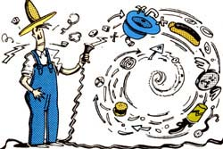

Well sir, the fit first stop the Plumtree Crossing boys made on their train trip (started last issue) was at a little of town called Jonesborough, Tessessee-an' they arrived just in time for the 14th annual National Storytelling Festival. there they heard this memorable tale told by one of the best yarn spinners of them all: the Reverend Donald Davis.
Uncle Frank got one of the first batch of telephones installed in Iron Duff: But when they put it in, he was on an eight-party line. Now, that wouldn't have been much trouble for him, except two of the other people were Lucy and Leena Leatherwood.
Lucy and Leena were what you might call natural born old maids. As soon as Uncle Frank would get up in the morning and pick up the telephone, they'd already be on there talking. yap yap yap yap yap yap yap. Every time of the day he picked it up they'd be there talking: yap yap yap-daylight to dark. He said they must be starving to death, they can't stop to eat.
Well now, not that anybody would actually pick up the phone when somebody else was talking and actually listen deliberately, but sometimes you pick up the phone and somebody', talking you might just linger for a moment to try to get an idea about maybe how long they might be on there.
Uncle prank picked up the phone one day and the first thing he heard was, "Them vitymine pills, them vitymine pills made me sick as a dog. I went to see Dr. Lancaster 'cause I's swimmy-headed and I got in there and Dr Lancaster and Miss Winny Kirkpatrick said there wasn't anything wrong with me-I wouldn't have gone up there if there wasn't something wrong with me and they got through and they gave me these vitymine pills and they made me as sick as a dog- I started out for home and I stopped out at Charlie's Drive-In and I got me three big hot dogs all the way with onions and everything on 'em and I got me two big of orders of french fries and I got me a big of Coca-Cola and that's what I took them vitymine pills with and them vitymine pills made me sick and as soon as we hit the first curve of the road below Junaluska, I started throwing up and I throwed up on every curve of the road all the way home I lost my good hot dogs them vitymine pills made me sick and-"Klunk! Uncle Frank had heard enough. That was going to go on all day.
Well, a little later Uncle Frank thought he'd try again. Pick up the telephone, it was the other one. She said, "It's that thermostat. That faulty thermostat burned their house down. I'm a gonna get somebody to come up here and check and see that I don't have no thermostat, they oughta outlaw them things you got one of them faulty thermostats it'll burn your house"-Klunk! That was enough of that.
Well, Uncle Frank got tired of paying his telephone bill month after month and not ever getting to use it. One morning he came in from milking, picked up the phone to check it like he always did, and instead of hearing one of the Leatherwoods talking, he heard just a little pause, and then the operator said, "Number, please."
And without one moment's hesitation, he said, "Give me Miss Lucy Leatherwood's number." Well, the phone went ring, ring, "Leena?" "No. Miss Leatherwood, this is Mr. Franklin Bell. I'm one of the Southern Bells. And I'm calling you about a potential problem you may have with your telephone." She says, "Problem?"
He says, "Tell me, Miss Leatherwood, in what room of your house is your telephone located?" She says, "It's in the parlor." "Well, look around in your parlor and see if there's anything that could be damaged by a large volume of water." She says, "Oh, Lord, yes. My granddaddy's grandfather clock's in there, there's a great big Persian rug in there, all kinds of-"
"You better listen. We had a storm up here last night, up on the Pigeon River, knocked the phone lines down. They went down in the river and broke. And when those lines broke they started sucking water. It wouldn't have been so bad if you had a private line, but those big of eight-party lines, they'll suck about 20 gallons of water every 10 seconds. And they started sucking water into Iron Duff: A man up there by the Antioch church answered his phone a little while ago, before he could get it back on the hook, it had washed his teeth out of his mouth, knocked his glasses off, put out the fire in the stove, and drowned his cat. Miss Leatherwood, don't answer your telephone. I'll tell you what. If you got a big tub around there, it'd be a good idea to put that telephone in that tub-just in case somebody rings you with the wrong number. We'll let you know when we've got it all fixed." And then he hung up.
Well, the rest of that day, Uncle Frank called my daddy, he called Aunt Esther, he called all the neighbors all around, he just spent the day using the telephone. Next morning he started to town, and he noticed as he passed by the Leatherwoods' two houses, he noticed these telephones hanging out the window-where they could drain real good.
Well, about two weeks everything was fine, but then Uncle Frank started getting a little bit bored because, you see, he'd lost his source of entertainment. And so Mr. Franklin Bell, one of the Southern Bells, had to write two letters to the Leatherwood sisters to tell them their telephones were fixed and everything was just fine.
EDITOR'S NOTE: "Mr. Franklin Bell" can be heard on Donald Davis's cassette tape My Lucky Day. Two other excellent Davis tapes are Meet the Jollies and Rainy Weather. These cassettes are available for $9 each postpaid from Donald Davis, 1501 E. Lexington, High Point, NC 27262.
For information about the National Association for the Preservation and Perpetuation of Storytelling, write NAPPS, P. O. Box 309, Jonesborough, TN 37659.
|
 ILLUSRTATIONS BY PETER KUPER |
|
|